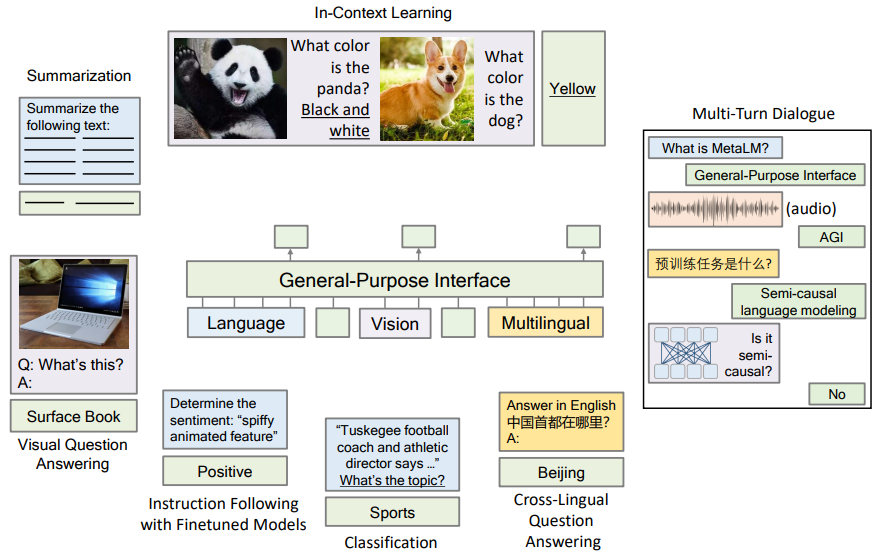
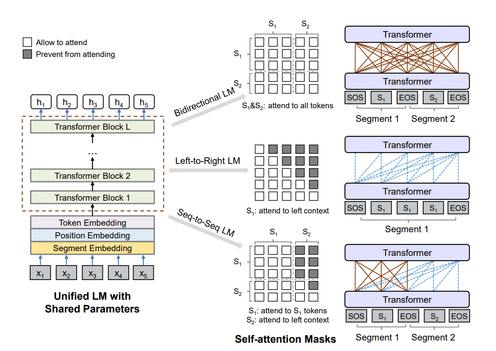

Advancing AI for humanity
⇛
Research
Blog
About
aka.ms/GeneralAI
Introducing DocReward: A Document Reward Model
October 13, 2025
Introducing TPT: Thinking Augmented Pre-Training
September 24, 2025
Introducing VibeVoice: Advancing the Frontier of Voice AI
August 26, 2025
Mean Matters in RL for LLMs: Geometric-Mean Policy Optimization
July 29, 2025
Introducing RPT: Reinforcement Pre-Training
June 10, 2025
Rectified Sparse Attention
June 5, 2025
On-Policy RL with Optimal Reward Baseline
Advancing the Foundation of RL in LLMs
May 30, 2025
The Frontier of Reward Models
May 21, 2025
Think Only When You Need with Large Hybrid-Reasoning Models
Adaptive Thinking Models
May 21, 2025
Introducing BitNet b1.58 2B4T - Scaling Native 1-bit LLMs
Apr 15, 2025
BitNet v2: Native 4-bit Activations for 1-bit LLMs
Apr 17, 2024
LatentLM: A Grand Unification of Multimodality
Dec 12, 2024
Differential Transformer
Oct 7, 2024
The Era of 1-bit LLMs: All Large Language Models are in 1.58 Bits
Feb 28, 2024
YOCO: Decoder-Decoder Architectures for Large Language Models
May 9, 2024
Scaling Laws of Synthetic Data for Language Models
Mar 25, 2025
BitNet a4.8: 4-bit Activations for 1-bit LLMs
Nov 8, 2024
Imagine while Reasoning in Space: Multimodal Visualization-of-Thought
Jan 13, 2025
Bootstrap Your Own Context Length
Dec 25, 2024
MH-MoE (v2): Multi-Head Mixture-of-Experts
Nov 26, 2024
1-bit AI Infra / bitnet.cpp: Running LLMs on CPUs
Oct 17, 2024
Q-Sparse / Block Q-Sparse: Fully Sparsely-Activated LLMs
Jul 15, 2024
The Era of 1-bit LLMs: Training Tips, Code and FAQ
Mar 20, 2024
MELLE: Autoregressive Speech Synthesis without Vector Quantization
Jul 11, 2024
VALL-E 2: Human Parity Zero-Shot Text to Speech Synthesis
Jun 8, 2024
The Learning Law: Towards Optimal Learning of Language Models
Feb 28, 2024
The Mind's Eye of (M)LLMs: Visualization-of-Thought Elicits Spatial Reasoning in Large Language Models
Apr 4, 2024
Synthetic Data (Almost) from Scratch: Generalized Instruction Tuning for Language Models
Feb 20, 2024
Multilingual E5 Text Embeddings
Feb 8, 2024
BitNet: 1-bit Transformers and LLMs
Oct 18, 2023
Retentive Network: Revolutionizing Transformers for Large Language Models
Jul 18, 2023
LongViT (LongNet for Vision): When an Image is Worth 1,024 1,024 Words
Dec 7, 2023
Kosmos-G: Generating Images in Context with Multimodal Large Language Models
Oct 4, 2023
Kosmos-2.5: A Multimodal Literate Model
Sep 20, 2023
Large Language Model for Science: A Study on P vs. NP
Sep 13, 2023
LongNet: Scaling Transformers to 1,000,000,000 Tokens
Jul 6, 2023
Kosmos-2: Grounding Multimodal Large Language Models (MLLMs) to the World
Jun 26, 2023
Kosmos-1: A Multimodal Large Language Model (MLLM)
Feb 28, 2023
WavMark: Watermarking for Audio Generation
Aug 24, 2023
VALL-E (X): Neural Codec Language Models are Zero-Shot Text to Speech Synthesizers
Jan 6, 2023
PoSE: Efficient Context Window Extension of LLMs via Positional Skip-wise Training
Sep 19, 2023
AdaLLM: Adapting Large Language Models via Reading Comprehension
Sep 18, 2023
MiniLLM: Knowledge Distillation of Large Language Models
Jun 14, 2023
Large Language Models with Long-Term Memory
Jun 12, 2023
LLM Accelerator: Lossless Acceleration of Large Language Models
Apr 11, 2023
A Length-Extrapolatable Transformer
Dec 20, 2022
Why Can GPT Learn In-Context? Language Models Secretly Perform Gradient Descent as Meta Optimizers
Dec 20, 2022
Promptist: Optimizing Prompts for Text-to-Image Generation
Dec 19, 2022
Structured Prompting: Scaling In-Context Learning to 1,000 Examples
Dec 12, 2022
TorchScale: Transformers at (Any) Scale
Nov 24, 2022
Magneto: A Foundation Transformer
October 13, 2022
BEiT-3: A General-Purpose Multimodal Foundation Model
Aug 30, 2022

Language Models are General-Purpose Interfaces
June 13, 2022
DeepNet: Scaling Transformers to 1,000 Layers
Mar 1, 2022
BEiT: BERT Pre-Training of Image Transformers
June 15, 2021
MiniLM: Multi-Head Self-Attention Relation Distillation for Compressing Pretrained Transformers
Feb 25, 2021
XLM-E: Efficient Multilingual Language Model Pre-training
June 30, 2021

UniLM: Unified Language Model Pre-training
May 8, 2019